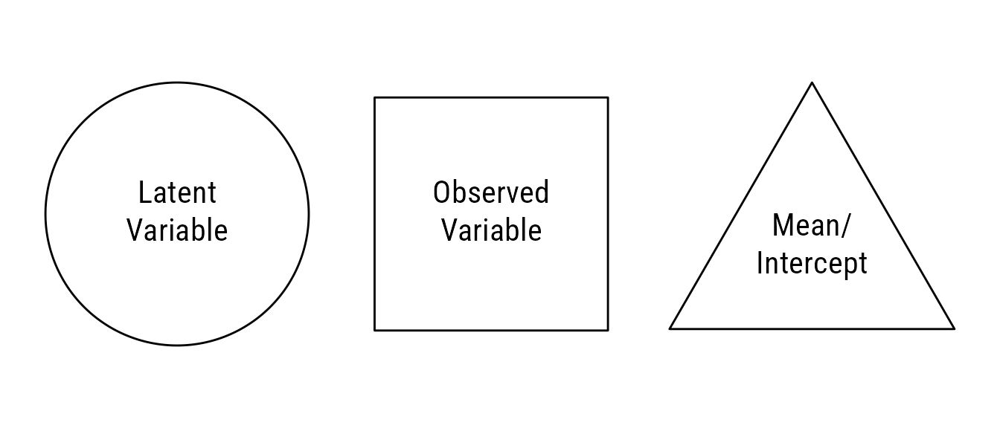
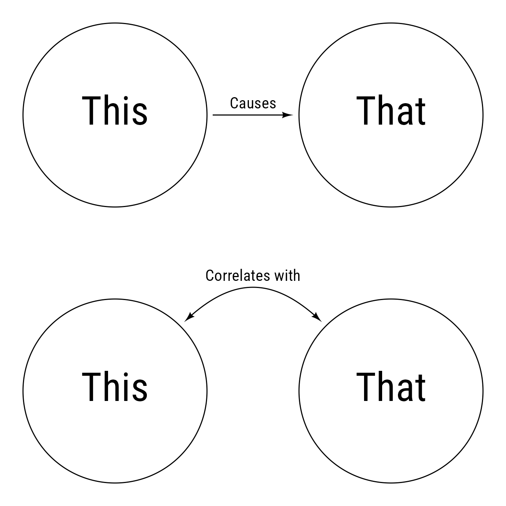

Setup
Path diagrams
Structural equation models are often displayed with path diagrams. The visual vocabulary of path diagrams is fairly simple. An observed variable is square (or rectangular) and a latent variable (i.e., not observed) is circular (or elliptical). Often omitted for clarity, means and intercepts are constants that can be depicted with triangles.
Code
ggplot() +
coord_equal() +
theme_void() +
{lv <- ob_circle(label = "Latent<br>Variable")} +
{r <- ob_rectangle(width = sqrt(pi),
height = sqrt(pi),
label = "Observed<br>Variable") |>
place(lv, "right", .5)} +
{i <- ob_circle(n = 3,
radius = 1.25,
label = "Mean/<br>Intercept") |>
place(r, "right", .3) + ob_point(0, -.25)}

Code
ggplot() +
coord_equal() +
theme_void() +
{this <- ob_circle(label = ob_label("This", size = 40))} +
{that <- ob_circle(label = ob_label("That", size = 40)) |>
place(this, "right")} +
connect(this, that, label = "Causes", resect = 2) +
{A <- this |>
place(this, "below")} +
{B <- that |>
place(that, "below")} +
covariance(A, B, label = ob_label("Correlates with", vjust = 0))

Code
ggplot() +
coord_equal() +
theme_void() +
{X <- ob_ellipse(
label = ob_label("*X*",
size = 60,
nudge_y = -.15),
m1 = 15)} +
{Y <- ob_ellipse(
label = ob_label("*Y*",
size = 60,
nudge_y = -.15),
m1 = 15) |>
place(X, "right")} +
{X_Y <- connect(X,Y,
label = ob_label("*b*~1~"),
resect = 2)} +
{sigma_x <- variance(X,
bend = -20,
where = degree("south"))} +
{sigma_e <- variance(Y,
bend = -20,
where = "south")} +
{i <- ob_polygon({icenter <- ob_polar(degree(60),
distance(X@center,
Y@center))} +
ob_polar(degree(c(90,210, 330))),
fill = NA,
color = "black",
label = ob_label(1,
size = 40))} +
connect(intersection(i, ob_segment(icenter, X@center)),
X,
label = ob_label("*μ~X~*", angle = 0),
resect = 2) +
connect(intersection(i, ob_segment(icenter, Y@center)),
Y,
label = ob_label("*b*~0~", angle = 0),
resect = 2)
# ggimage::geom_image(
# data = tibble(x = sigma_x@midpoint()@x,
# y = sigma_x@midpoint()@y),
# aes(x = x,
# y = y,
# image = "sigma2x.pdf"),
# size = .05) +
# ggimage::geom_image(
# data = tibble(x = sigma_e@midpoint()@x,
# y = sigma_e@midpoint()@y),
# aes(x = x,
# y = y,
# image = "sigma2e.pdf"),
# size = .05)
Code
ggplot() +
coord_equal() +
theme_void() +
# Place a latent variable at the top
{l1 <- ob_circle(radius = 2)} +
# Place an array of observed variables below the circle
{o3 <- ob_ellipse(m1 = 9) |>
place(from = l1,
where = "below",
sep = 2) |>
shape_array(
k = 3,
where = 0,
sep = .4)} +
# Connect the latent to the observed variables at the north anchor point
{l1_o3 <- connect(l1,
o3@point_at("north"),
resect = 2)} +
# Place error terms below each observed variable
{e3 <- ob_circle(radius = .75) |>
place(o3,
where = "below",
sep = .85)} +
# Connect the error terms to the observed variables
{e3_o3 <- connect(e3, o3, resect = 2)} +
# latent variance1
{v_l1 <- variance(l1, where = "north")} +
# label(1, v_l1@midpoint()) +
{v_e3 <- variance(
e3,
where = "south",
looseness = 1.5,
resect = unit(3, "pt"),
arrowhead_length = unit(7, "pt"),
arrow_head = arrowheadr::arrow_head_deltoid(2.4),
arrow_fins = arrowheadr::arrow_head_deltoid(2.4))}
Code
my_fills <- viridis::viridis(n = 3, begin = .3, end = .6) %>%
class_color() %>%
set_props(saturation = .6, brightness = .5) %>%
c()
my_path_color <- "gray40"
my_resect <- 1
broad <- c("Gv", "Gf", "Gc")
my_arrowhead <- arrowheadr::arrow_head_deltoid(2.3)
# my_arrowhead <- ggarrow::arrow_head_wings()
g2broad <- c(Gv = .84, Gf = .95, Gc = .80)
broad2indicator <- list(Gv = c(.78, .84, .91),
Gf = c(.88, .81, .74),
Gc = c(.74, .91, .93))
broad_variance <- 1 - g2broad ^ 2
latent <- redefault(ob_circle,
color = NA)
lb_latent <- redefault(ob_label,
size = 30,
fill = NA,
color = "white")
observed <- redefault(ob_ellipse,
a = .5,
b = .5,
m1 = 10,
# fill = my_fill,
color = NA)
lb_observed <- redefault(ob_label,
size = 15,
fill = NA,
color = "white",
nudge_y = -.04)
lb_path <- redefault(ob_label,
size = 11,
fill = "white",
color = my_path_color)
direct <- redefault(
connect,
resect = my_resect,
color = my_path_color,
arrow_head = my_arrowhead,
linewidth = .5,
length_head = 6
)
var_latent <- redefault(
variance,
theta = 40,
resect = my_resect,
color = my_path_color,
looseness = .9,
linewidth = .5,
arrow_head = my_arrowhead,
arrow_fins = my_arrowhead,
arrowhead_length = 6)
ggplot() +
coord_equal() +
theme_void() +
{g <- latent(label = lb_latent("*g*"), fill = "gray15")} +
var_latent(g, label = lb_path(1)) +
{Gx <- place(g, g,where = "below", sep = 1.6) |>
shape_array(k = 3,
sep = 2,
label = lb_latent(broad,
vjust = .6),
fill = my_fills)} +
var_latent(Gx,
where = "left",
color = Gx@fill,
label = lb_path(
round_probability(broad_variance,
phantom_text = "."),
color = Gx@fill)) +
{pGx <- direct(g, Gx, color = Gx@fill)} +
{lb_path(
label = round_probability(g2broad,
phantom_text = "."),
p = pGx@line@point_at_y(pGx[2]@midpoint(
position = .47)@y),
color = Gx@fill)} +
# list----
purrr::map(as.list(Gx), \(b) {
o1 <- place(observed(fill = b@fill),
from = b,
where = "south",
sep = 1.6)
o <- shape_array(
o1,
k = 3,
sep = .2,
fill = purrr::map_chr(c(.6, .75, .9), tinter::lighten, x = o1@fill),
label = lb_observed(
paste0(
b@label@label,
"~",
1:3,
"~")))
p <- direct(b, o@point_at("north"), color = b@fill)
l <- lb_path(round_probability(
broad2indicator[[b@label@label]],
phantom_text = "."),
p = p@line@point_at_y(p[2]@midpoint(position = .47)@y),
color = b@fill)
v <- variance(
o,
where = "south",
bend = -15,
looseness = 1.7,
resect = my_resect,
color = b@fill,
theta = 70,
linewidth = .5,
label = lb_path(
round_probability(sqrt(1 - broad2indicator[[b@label@label]] ^ 2)),
color = b@fill),
arrow_head = my_arrowhead,
arrow_fins = my_arrowhead,
arrowhead_length = 6
)
c(o, p, v, l) %>%
lapply(as.geom)
})
ggplot() +
coord_equal() +
theme_void() +
{g <- latent(label = lb_latent("*g*"), fill = "gray15")} +
var_latent(g, label = lb_path(1), arrow_head = arrowheadr::arrow_head_deltoid() %>% arrowheadr::nudger(c(.5,0)) %>% arrowheadr::rescaler(.5)) +
{Gx <- place(g, g,where = "below", sep = 3) |>
shape_array(k = 3,
sep = 3,
label = lb_latent(broad,
vjust = .6,
color = "gray15"),
fill = "gray15")} +
var_latent(Gx, "left",
label = lb_path(
round_probability(broad_variance,
phantom_text = "."),
color = my_fills),
color = my_fills) +
{pGx <- direct(g, Gx, color = Gx@fill)} +
{lb_path(
label = round_probability(g2broad,
phantom_text = "."),
p = pGx@line@point_at_y(pGx[2]@midpoint(
position = .47)@y),
color = Gx@fill)} +
ob_arc(center = Gx@center,
start = turn(.5) + turn(broad_variance) / 2,
end = turn(.5) - turn(broad_variance) / 2,
wedge = TRUE, fill = my_fills) +
lb_latent(broad, p = Gx@center, vjust = .6)
ggplot() +
coord_equal() +
theme_void() +
{g <- latent(label = lb_latent("*g*"), fill = "gray15")} +
{start <- degree(90 - 25)
end <- degree(90 + 25)
p_start <- g@point_at(start)
p_end <- g@point_at(end)
p_center <- intersection(g@tangent_at(start), g@tangent_at(end))
v_circle <- ob_circle(p_center, radius = distance(p_start, p_center))
ob_arc(
center = p_center,
radius = v_circle@radius,
end = v_circle@angle_at(p_start),
start = v_circle@angle_at(p_end) + degree(360),
resect = 2,
arrow_head = my_arrowhead,
arrow_fins = my_arrowhead,
arrowhead_length = 7,
linewidth = .5
)
}
Code
ggplot() + coord_equal() + theme_void() +
# Latent Variable
{Gc <- ob_circle(
fill = "dodgerblue4",
alpha = .6,
color = NA,
label = ob_label(
"Gc",
nudge_y = -.05,
fill = NA,
color = "white",
size = 60))} +
# Observed Variables
{Gc_3 <- ob_ellipse(a = .5,
b = .5,
m1 = 10,
fill = "dodgerblue4") |>
place(from = Gc, where = "below", sep = 1.25) |>
shape_array(
k = 3,
where = 0,
sep = .2,
color = NA,
alpha = c(.55,.7,.85),
label = ob_label(subscript("Gc", seq(3)),
size = 24,
nudge_y = -.05,
color = "white",
fill = NA))} +
# Paths from latent to observed
{pGc_Gc_3 <- connect(Gc, Gc_3@point_at("north"),
resect = 2,
color = "gray30",
alpha = 1)} +
# Place labels on a horizontal line
ob_label(label = round_probability(c(.75, .65, .89)),
p = pGc_Gc_3@line@point_at_y(pGc_Gc_3[2]@midpoint()@y)) +
# Place errors below observed variables
{e_Gc_3 <- ob_circle(radius = .3,
fill = "dodgerblue4",
color = NA,
alpha = c(.55,.7,.85) - .2) |>
place(from = Gc_3,
where = "below",
sep = .4)} +
# Paths from errors to observed variables
connect(x = e_Gc_3,
y = Gc_3,
color = "gray30",
resect = 2,
alpha = 1)